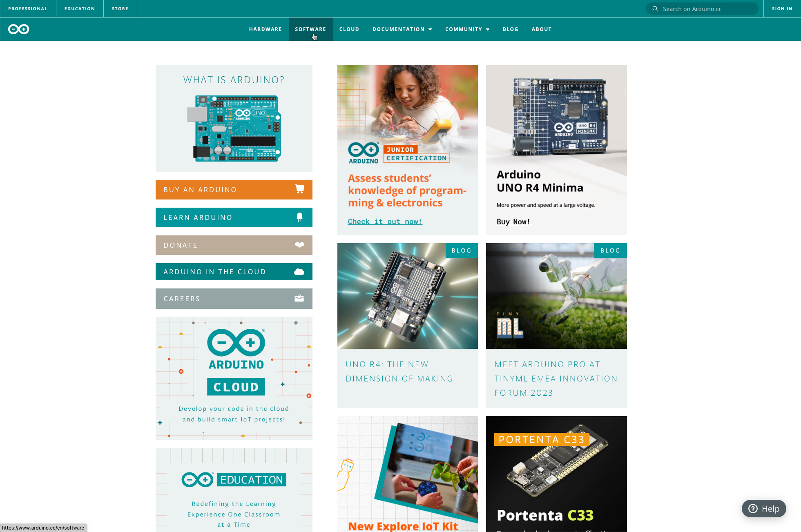
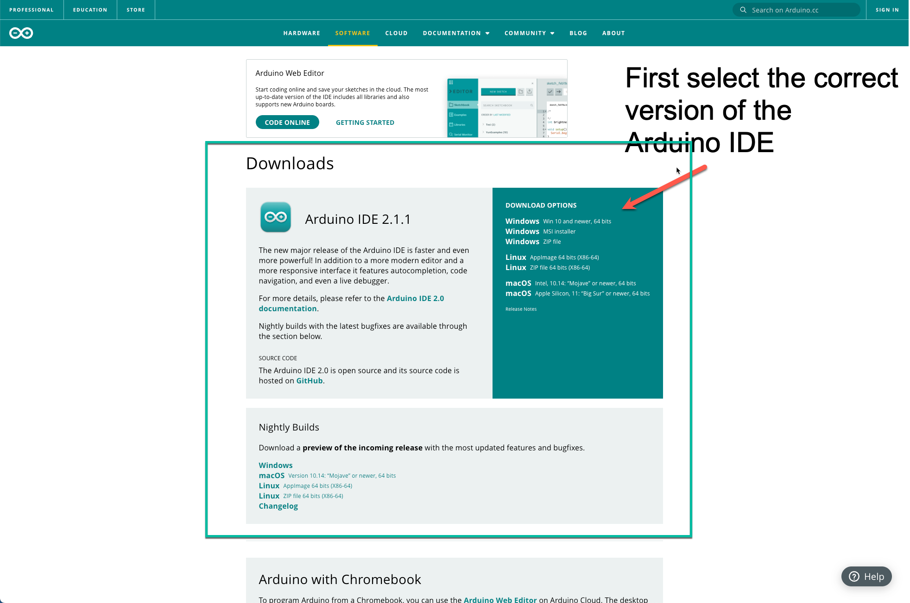
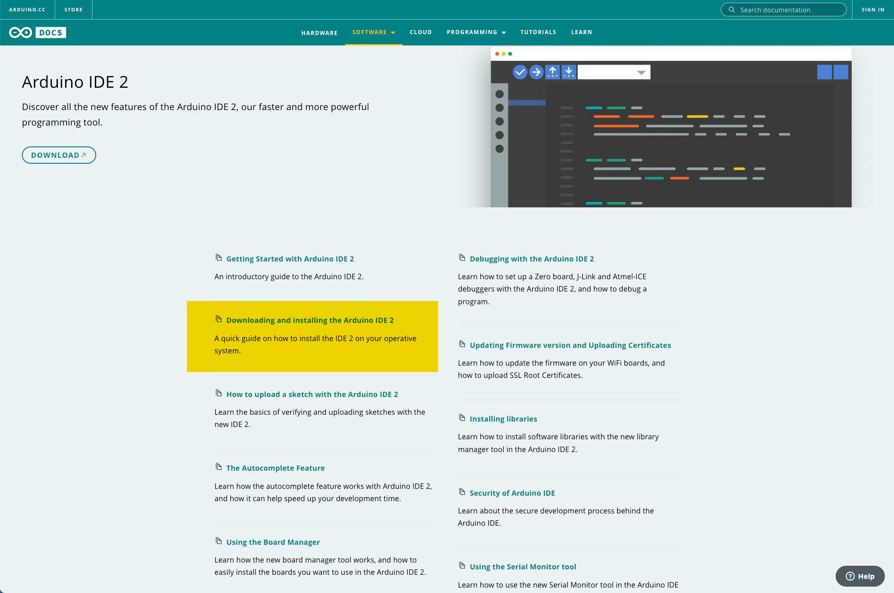
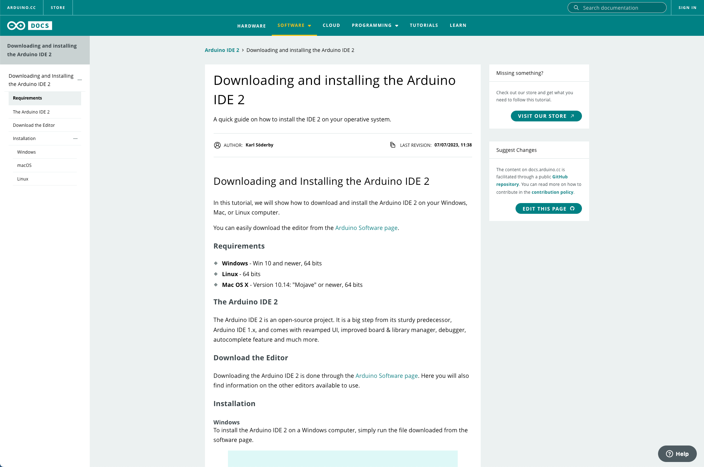
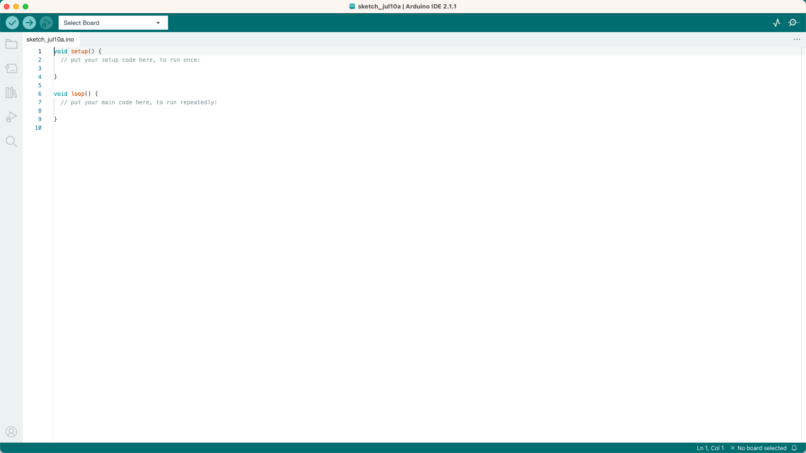
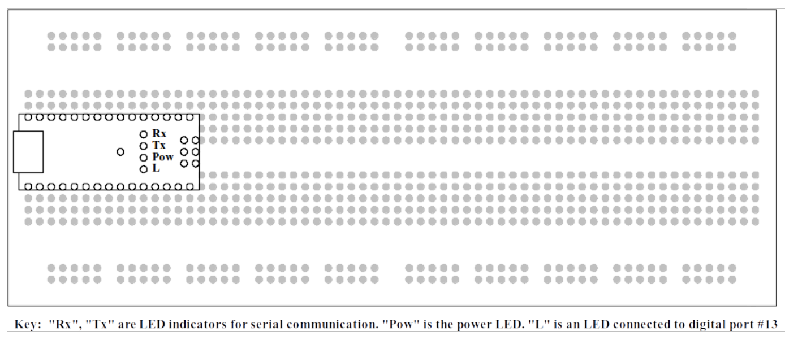
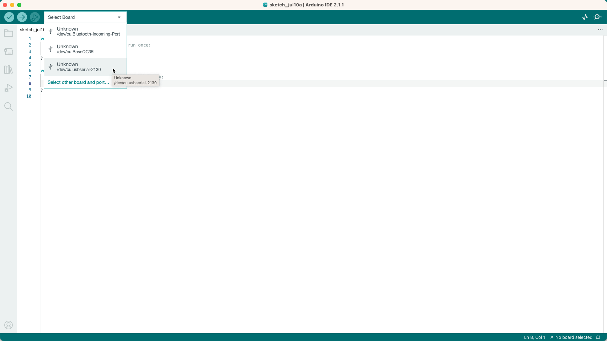
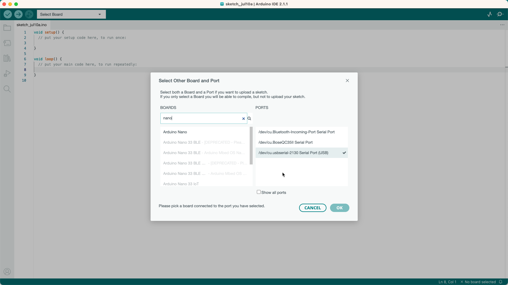
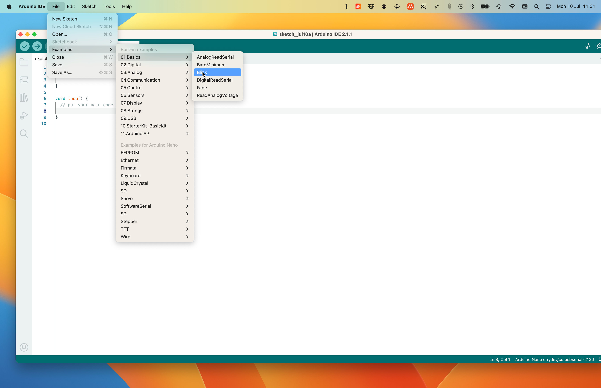
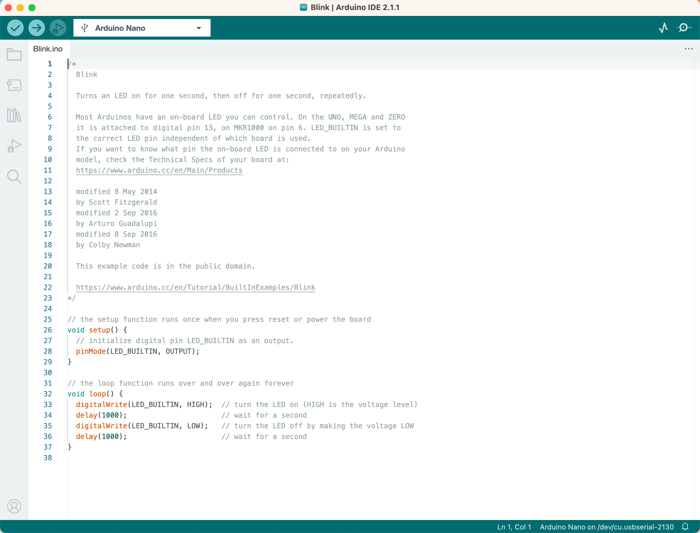

Getting Started#
Introduction#
Microcontrollers are an important topic for the Electronics Engineer. So many modern devices have a microcontroller at their core, even apparently “dumb” products such as toasters and electric fans. Specifying the right microcontroller for a specific task is a useful skill, so in our Electronic and Electrical Engineering degree program you will be exposed to a number of different microcontrollers.
As an introduction to the subject, we shall learn how to program a popular 8-bit microcontroller in the “C” language. The specific microcontroller we shall be using is the Arduino Nano, a low-cost board with a range of useful features. Before we can program it, however, we shall have to install the Arduino Integrated Development Environment (IDE) onto your computer. If you are using one of the PCs in room B107, the software is already installed. The software is free, so you can install it on your own computer if you wish. The IDE has been produced in several versions, which can be run on Linux, Windows, and Apple computers.
A vast amount of information about the Arduino project can be found on their website, arduino.cc, including downloads for the IDE. Many of you already have some experience using Arduino harware and software, and so may have the IDE already installed.
Our friends in the Swansea Hackspace have an extensive web site, which also offers guidance on getting started with Arduino projects. Their website can be found at swansea.hackspace.org.uk. If you click on “Activities” followed by “Learning” you will be offered a range of tutorials, including one on the Arduino. Click on “Introduction to Arduino” and you will find a detailed description of the device. You may find it useful to read through some of these pages before starting on the installation procedure detailed below.
Installing the Arduino IDE 2 on Your Computer#
Windows#
Modern Windows 10 and 11 machines are capable of finding the necessary driver for the CH340 interface chip automatically. A good strategy would be to start the Windows 10 machine, and when it is ready plug in the Arduino Nano board using the supplied lead. After a few minutes, type Device Manager into the search box, and run the application offered to you. You should see a list of devices, including “Ports (COM and LPT)”. Click on this item and look at the lines following. One of these should read “USB-SERIAL CH340 (COM5)” or similar. Make a note of the COM port number and close the Device Manager.
Next, unplug the Arduino Nano board. Go to arduino.cc (Fig. 131) and select the tab “Software&rdquo. This will bring up a new page of options (Fig. 132). Move past “Arduino Web Editor” and look at the section titled “Downloads” and the box labelled Arduino IDE 2.1.1. Look on the right-hand side and click on “Windows Installer for Windows 10 and newer”, which is the first item in the list. When the installation file has finished downloading return to the previous page using “back” on your browser. In the section marked “Arduino IDE 2.1.1” you will see the words “For more details, please refer to the Arduino IDE 2.0 documentation.” . Click on the link labelled Arduino IDE 2.0 documentation to open the Arduino IDE 2 dicumentation page (highlighted in Fig. 133) and then select Downloading and installing the Arduino IDE 2 from the table of contents to open the Downloading and installing the Arduino IDE 2 page ({numref:fig:4}).
Follow the detailed instructions for Windows to start the installer. There will follow quite a lengthy installation procedure, during which you will be offered additional drivers for other members of the Arduino family, including the boards offered by the company Adafruit. We recommend installing these additional drivers. When the installation is complete, plug in the Arduino Nano board and click on the “Arduino IDE” icon that has appeared on your desktop.
{kind=link}

Fig. 131 The homepage arduino.cc with software selected#
{kind=link}

Fig. 132 The software page on arduino.cc#
{kind=link}

Fig. 133 The Arduino IDE 2 page#
{kind=link}

Fig. 134 The installation instructions page.#
Linux#
Fortunately, all Linux systems have the necessary drivers in place already, so it is only necessary to install the Arduino IDE application.
Go to arduino.cc and select the tab “Software”. This will bring up the Arduiono IDE 2 page (Fig. 132). Move past the instructions for “Arduino Web Editor” and look at the section titled “Downloads”. In the section marked “Arduino IDE 2.1.1” you will see the words “For more details, please refer to the Arduino IDE 2.0 documentation.” . Click on the link labelled Arduino IDE 2.0 documentation to open the Arduino IDE 2 dicumentation page (highlighted in Fig. 133) and then select Downloading and installing the Arduino IDE 2 from the table of contents to open the Downloading and installing the Arduino IDE 2 page ({numref:fig:4}). Follow the detailed instructions for Linux to start the installer.
There will follow quite a lengthy installation procedure, involving unpacking the tar file, and running the script “install.sh”, either from the command line or using “Run in terminal” from “Files”. During the installation you will be offered additional drivers for other members of the Arduino family, including the boards offered by the company Adafruit. We recommend installing these additional drivers. When the installation is complete, plug in the Arduino Nano board and click on the “Arduino IDE” icon that has appeared on your desktop.
Apple (MacOS)#
Once again, go to arduino.cc and select the tab “Software”. This will bring up the Arduiono IDE 2 page (Fig. 132). Move past the instructions for “Arduino Web Editor” and look at the section titled “Downloads”. In the section marked “Arduino IDE 2.1.1” you will see the words “For more details, please refer to the Arduino IDE 2.0 documentation.” . Click on the link labelled Arduino IDE 2.0 documentation to open the Arduino IDE 2 dicumentation page (highlighted in Fig. 133) and then select Downloading and installing the Arduino IDE 2 from the table of contents to open the Downloading and installing the Arduino IDE 2 page ({numref:fig:4}). Follow the detailed instructions for MacOS to start the installer.
Initial set up#
When you are satisfied that the Arduino IDE has been successfully installed, run the application. Assuming that the installation procedure described above has gone to plan, and after the splash screen, the Arduino IDE main screen (Fig. 135) appears.
{kind=link}

Fig. 135 The Ardino IDE 2 Main Screen on First Run#
Plug in the Arduino Nano board (Fig. 136) using the supplied lead. Next look at the dropdown control labelled *Select Board. Identify the connection which depends on your operating system but will be identified as a USB connection on MacOS and Linux, or may be labelled COM 5 (or some other number) on Windows (see Fig. 137).
{kind=link}

Fig. 136 The Arduino nano microntroller mounted on breadboard#
{kind=link}

Fig. 137 Choose the port that your nano board is connected on. What you will see here depends on your operating system. I have shown what I see on my MacOS machine.#
Once you have selected the correct port, you need to identify the board you are using. Search for nano as shown in Fig. 137
{kind=link}

Fig. 138 Search for and select Arduino Nano.#
Once you have set up your board, the board idenitfier changes to Arduino Nano in the menu bar as shown in Fig. 139. You are now ready to compile your first program.
{kind=link}
Fig. 139 Arduino IDE 2 set up and ready to go.#
On the blink#
The first program we shall run rejoices in the unlikely name of Blink. Click on File and select Examples from the drop-down menu. A further menu appears, with all the example programs. Select 01.Basics, followed by Blink (Fig. 140).
{kind=link}

Fig. 140 Select the blink example.#
Select Blink. The program appears in a new IDE window (Fig. 141). The program at this stage is just text. It needs to be compiled in order to create an executable file.
{kind=link}

Fig. 141 Blink program (Arduino sketch blink.ino) loaded in the Arduino IDE 2.#
Identify the icon for compiling the program, this is a tick in a blue circle which is called Verify on the Arduino IDE. Click this once, and after a short period of time the message “Done compiling” should appear near the bottom of the window. Hopefully, as we are compiling an example program, there will be no errors! If there are errors, information on the type of error and where it has occurred in the program can be found in the dialogue box near the bottom of the window.
Next, we need to transfer the executable file to the Arduino Nano board. This is done by identifying the icon Upload, which is a right arrow in a blue circle, and clicking it once. Annoyingly, the IDE insists on re-compiling the program. If all has gone to plan, the message “Done Uploading” appears. Then after a few seconds the executable file starts running on the Nano board. One of the LEDs begins flashing at a regular rate, one second on, one second off.
Modifying Blink#
So far, so good.
Now, let us try changing the program. Look at the text screen, the “source code”. You will find two instances of the instruction delay(1000).
Move the cursor and change the argument of the two instructions to 100. Now, with your new-found knowledge, re-compile the program and upload it to the Nano.
When the message “Done Uploading” appears, look at the LED on the Nano. It should be flashing at ten times the previous rate.
Congratulations! You have successfully edited the program.
If you like, you can save the edited program by clicking on File, selecting “Save As” and when the dialogue appears, give the program a new name, for example “myblink”.
You are now ready to attempt the first laboratory exercise Experiment 1: Binary Counter.